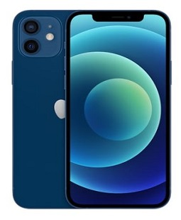
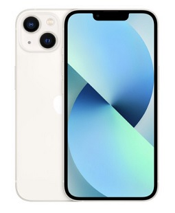
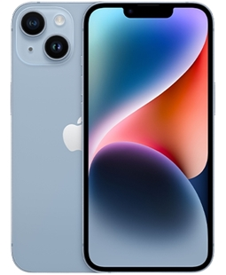
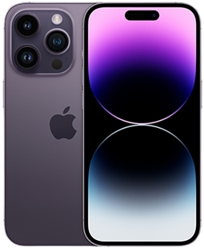
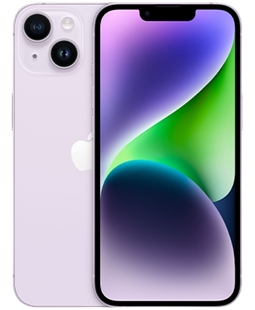

스마트폰
스마트폰 기술은 컴퓨터를 결합한 무선 휴대전화이다. PC에서 실행되는 운여체제보다 작게 만든 모바일 운영체제를 탑재하여 인터넷 검색, 전자우편, 간단한 문서 편집, 카메라, 오디오 및 비디오 재생 등 PC의 기능을 거의 모두 갖추고 있다.
목차
역사
안드로이드
아이폰
샘플
역사
최초의 스마트폰으로 꼽히는 휴대전화는 1992년 IBM에서 개발한 '사이먼(Simon)'이다. 사이먼은 지금의 스마트폰과는 달리 크기도 크고 단색 화면이었다. 하지만 계산기와 메모장, 전자우편, 팩스 등의 기능을 갖추고 있었다.손가락으로 화면을 터치해 전화번호를 입력할 수도 있었다.
안드로이드
안드로이드(영어: Android)는 스마트폰, 태블릿 PC 같은 터치스크린 모바일 장치 용으로 디자인된 운영 체제이자 수정된 리눅스 커널 버전을 비롯한 오픈 소스 소프트웨어에 기반을 둔 모바일 운영 체제다.
아이폰
아이폰(영어:iphone)은 2007년 1월 9일, 애플이 발표한 휴대 전화 시리즈이다. 미국 센프란시스코에서 열린 맥월드 2007에서 애플의 창업자 중 한명인 스티브 잡스가 발표했다.
샘플
스마트폰 샘플




